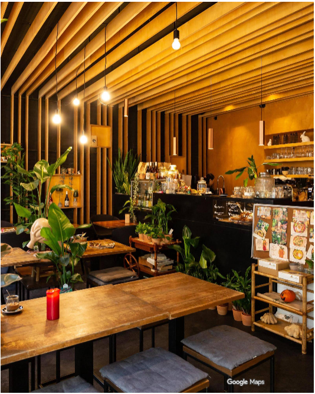
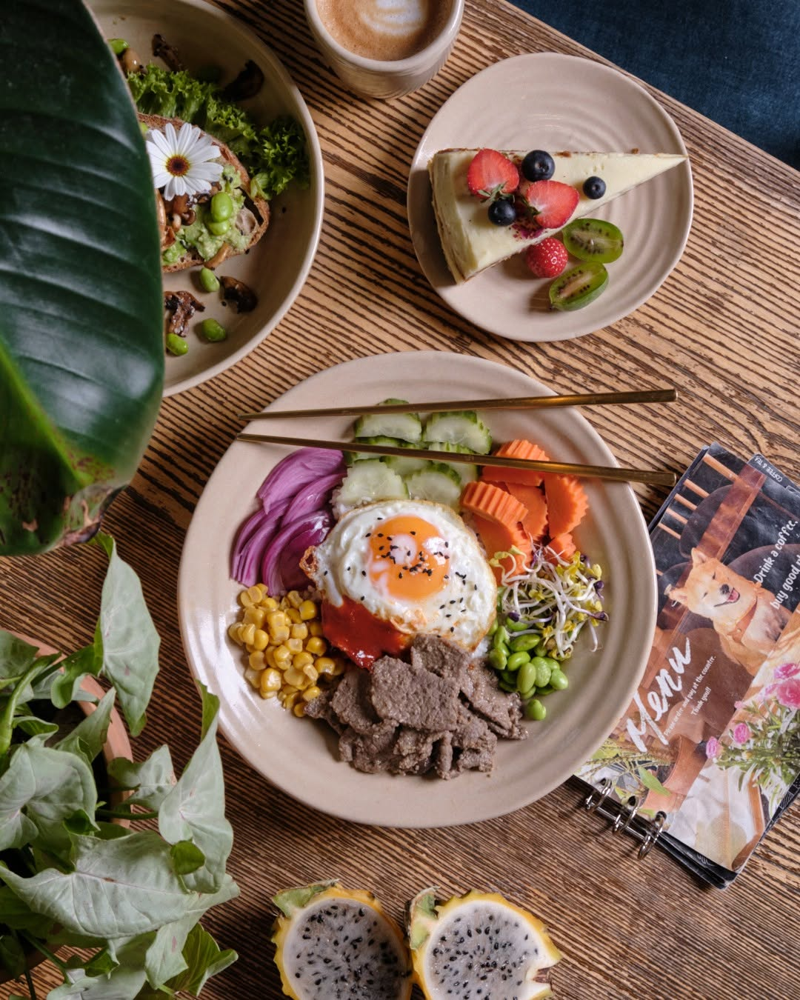
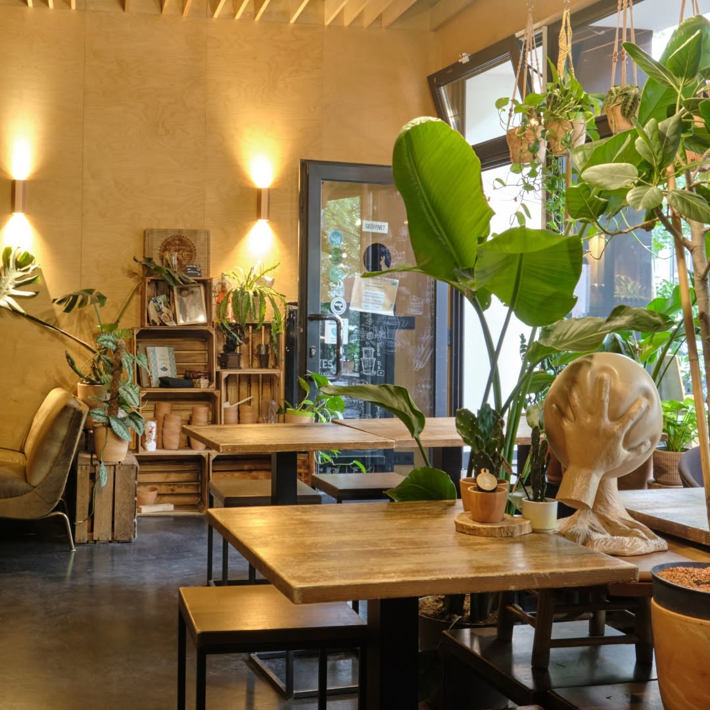
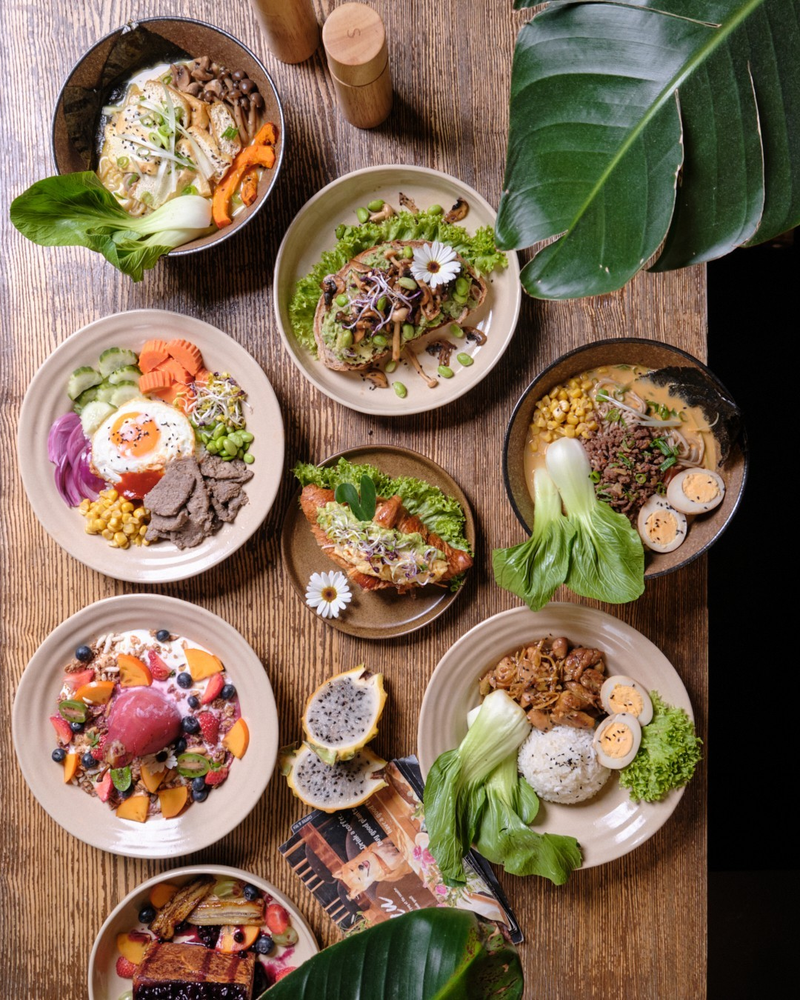
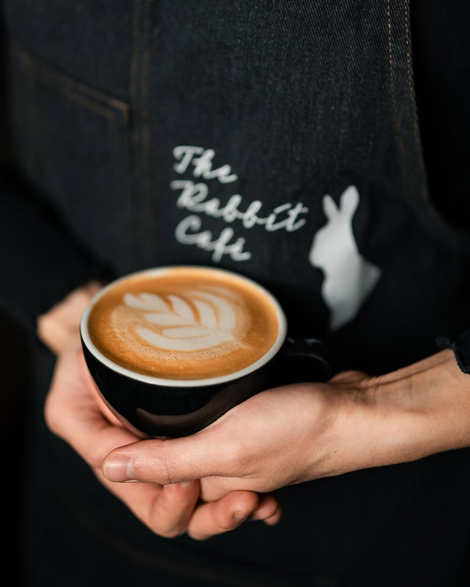
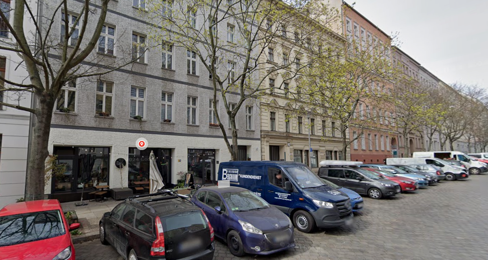
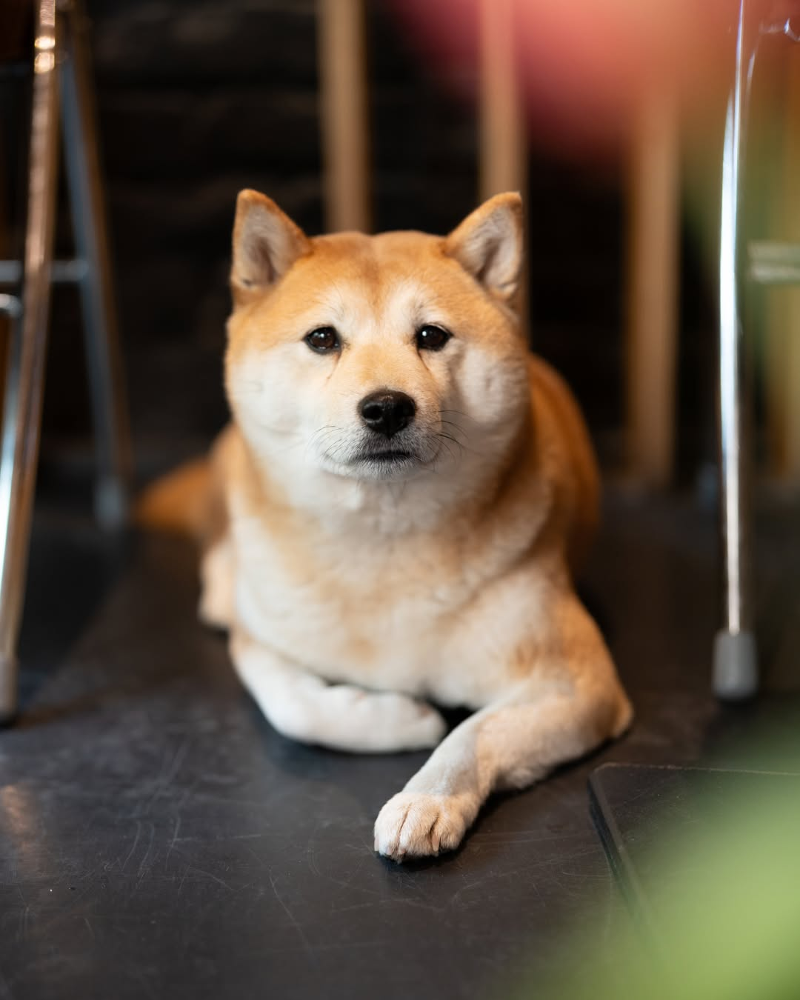
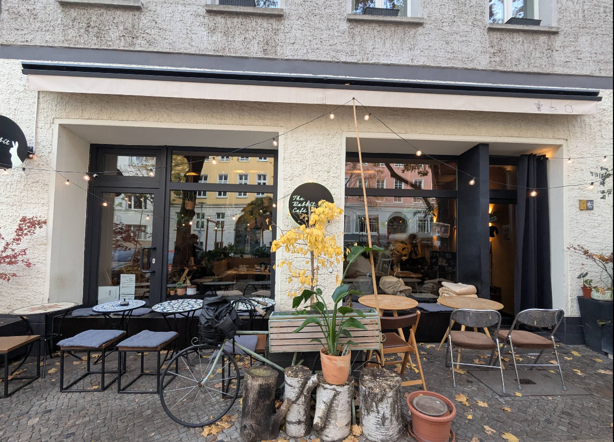

Cozy seating, natural light and plenty of plants.
A cozy coffee & plant shop in Berlin’s Mitte district, serving specialty coffee, Asian & Western bites, and laid-back vibes. Dog-friendly & brunch-approved.

The Rabbit Café is tucked away on Strelitzer Str. 62, just a short walk from some of Berlin’s most vibrant streets. Inside, you’ll find specialty coffee, a jungle of plants, and a relaxed neighborhood crowd.
Part coffee house, part plant shop – The Rabbit Café is designed to feel like your cozy living room, but with better coffee. Grab a seat by the window, work on your laptop, or just hang out with friends over brunch.
The menu mixes comforting Asian & Western flavors: think fluffy egg drop sandwiches, avocado toast, Korean-inspired bowls and an ever-changing selection of cakes and sweets.
And yes, you might meet a couple of very photogenic Shiba Inus while you’re here. 🐕




Replace the images below with the same photos you’re already using
on Google Maps / Instagram. Just keep the filenames or update the
src paths.



Drop by for a quick espresso, slow brunch or a coffee date with friends. You’ll find us right in the heart of Berlin Mitte.
We’re located between Brunnenstr. and Bernauer Str., a short walk from public transport and close to the Berlin Wall Memorial.
If you want a live map here, you can replace this box with a Google Maps <iframe> embed.